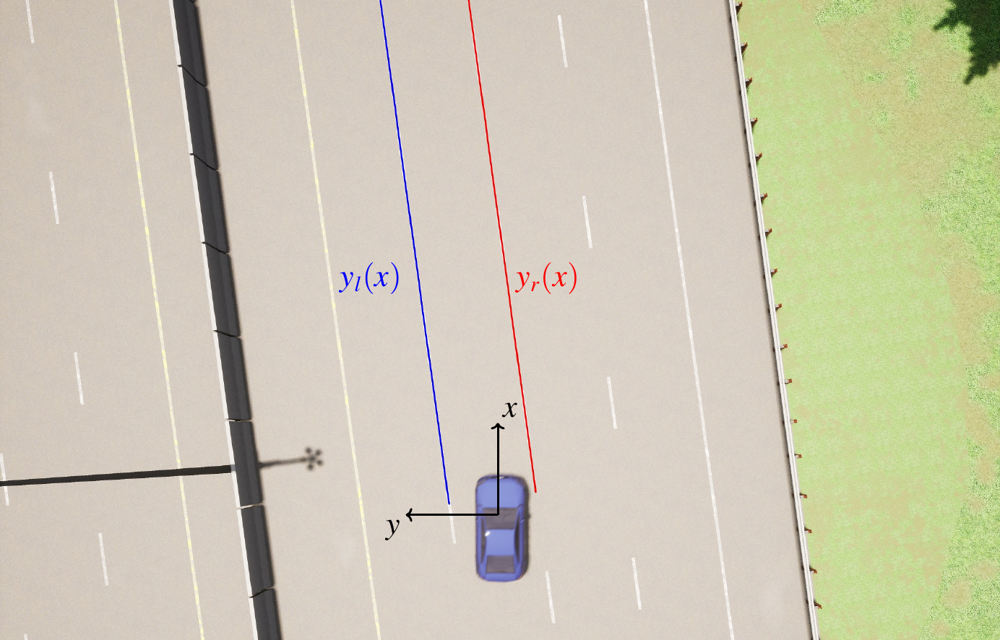

Vision — Overview#
In this module we want a metric lane geometry that a lateral controller can follow — not a pretty HUD overlay. If the polyline is wrong, delayed, or expressed in the wrong \(y\)-sign, Pure Pursuit and MPC will look “broken” even when their math is fine.
{kind=link}

Рис. 3 Bird’s-eye path \(y(x)\) in meters. Controllers think in this plane: longitudinal \(x\) ahead, lateral \(y\) across the lane.#
What the controller needs#
At each vision frame the stack should publish something equivalent to:
a reference path \(\{(x_i, y_i)\}\) in meters ahead of the vehicle;
enough metadata to know whether paint / plan is trustworthy (probabilities, age);
timestamps (
capture_ts,infer_ts) so latency can be measured later.
In Phone ADAS that contract lives on topic vision/lanes (after TopicConvert the C++ services see a polyline). Point source — live Supercombo, map, or bag replay — is indistinguishable to pp / mpc / fp. That is intentional: you can debug geometry offline before touching gains.
Two pipelines (AAD vs this course)#
AAD |
Phone ADAS |
|
|---|---|---|
Lane pixels |
you train a segmenter |
Supercombo heads (fixed ONNX) |
Meters |
IPM + camera height / RPY |
model output in device frame + calib input warp |
Contract |
\(y_l(x)\), \(y_r(x)\) polynomials |
|
Exercise focus |
implement detector + IPM |
read contract, stamps, failure modes |
Примечание
Training Supercombo is out of scope. You treat the network as a black box with a published layout and learn how our Java/C++ pipeline feeds and parses it.
Chapters in this module#
Coordinate systems — device \(y\) right+ vs ISO \(y\) left+; the #1 source of inverted steering.
Supercombo on device — warp → ORT → parse → publish; Hz and thermal.
Then you move to Control.
Code map (read, do not memorize)#
piece |
role |
|---|---|
|
extrinsics-aware warp to 512×256 |
|
ONNX Runtime session |
|
heads → polylines |
|
drop policy when busy |
|
HUD only — not the control contract |
Sanity checklist before blaming the controller#
Vision rate \(\gtrsim 9\) Hz on the window you evaluate.
Bird’s-eye plot: left paint has the expected \(y\) sign for the chosen frame.
Plan / lane blend looks continuous (no jumps of meters between frames).
Only then sweep
pp_*or MPC weights.
Next: Coordinate systems